Advanced/Intermediate Math Classes
MATH/ISYE/CS/STAT 525: Linear Optimization
Introduces optimization problems whose constraints are expressed by linear inequalities. Develops geometric and algebraic insights into the structure of the problem, with an emphasis on formal proofs. Presents the theory behind the simplex method, the main algorithm used to solve linear optimization problems. Explores duality theory and theorems of the alternatives.
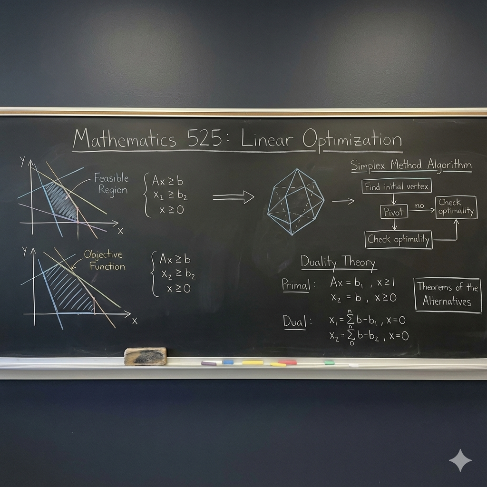
MATH 444: Graphs and Networks in Data Science
Mathematical foundations of networks with an emphasis on their applications in modern data science, using tools from algorithmic graph theory and linear algebra. Topics include: basics of graph theory, network statistics, graph traversal algorithms and implementation, matrix methods, community detection, PageRank, simulation of random graph models.
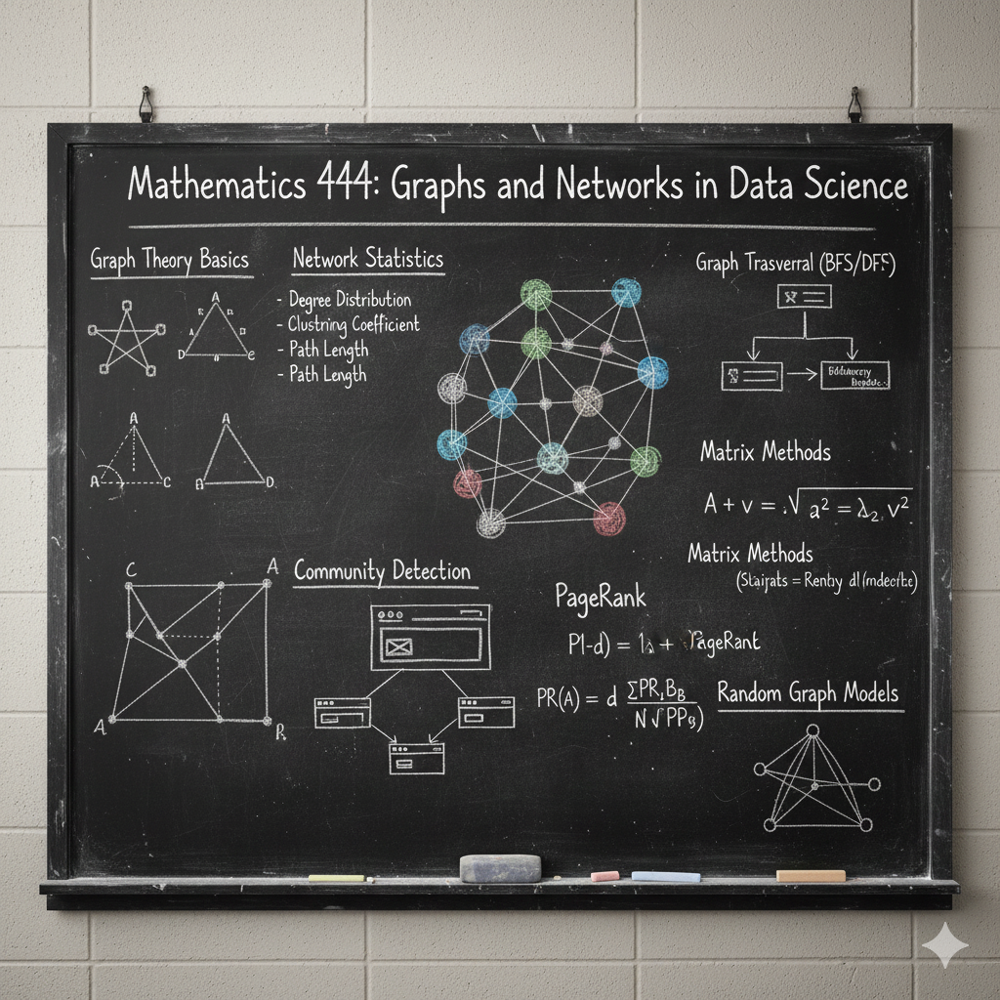
MATH 425: Introduction to Combinatorial Optimization (Planned Fall 2026)
Focuses on optimization problems over discrete structures, such as shortest paths, spanning trees, flows, matchings, and the traveling salesman problem. We will investigate structural properties of these problems, and we will study both exact methods for their solution, and approximation algorithms.
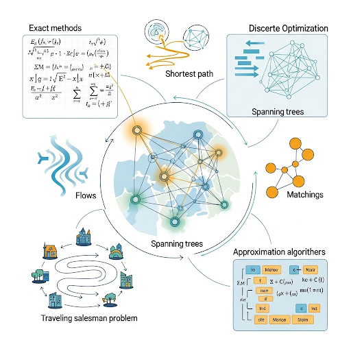
MATH 340: Elementary Matrix & Linear Algebra
An introduction to linear algebra. Topics include matrix algebra, linear systems of equations, vector spaces, sub-spaces, linear dependence, span, basis, rank of matrices, determinants, linear transformations, coordinate representations, kernel, range, eigenvalues and eigenvectors, diagonalization, inner products and orthogonal vectors, symmetric matrices. Covers linear algebra topics in greater depth and detail than MATH 320. Formal techniques in mathematical argument [MATH 341] not covered.
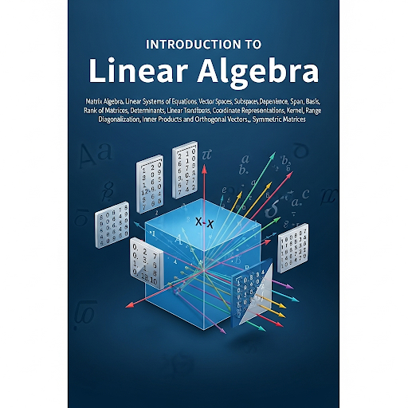
Advanced/Intermediate Computer Science Classes
CS 570: Introduction to Human-Computer Interaction
User-centered software design: (1) principles of and methods for understanding user needs; designing and prototyping interface solutions; and evaluating their usability, (2) their applications in designing multiple types of interfaces through group projects.
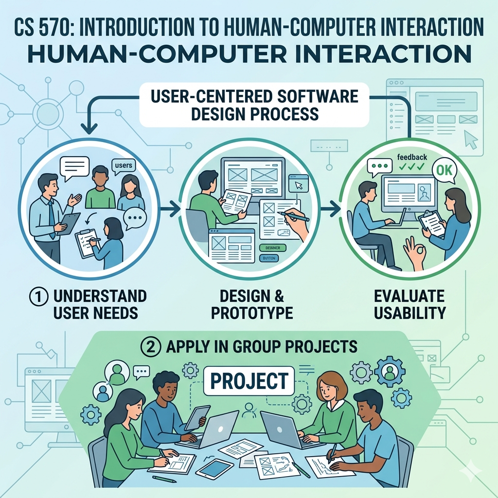
CS 564: Database Management Systems: Design and Implementation
What a database management system is; different data models currently used to structure the logical view of the database: relational, hierarchical, and network. Hands-on experience with relational and network-based database systems. Implementation techniques for database systems. File organization, query processing, concurrency control, rollback and recovery, integrity and consistency, and view implementation.

CS 540: Introduction to Artificial Intelligence
Principles of knowledge-based search techniques, automatic deduction, knowledge representation using predicate logic, machine learning, probabilistic reasoning. Applications in tasks such as problem solving, data mining, game playing, natural language understanding, computer vision, speech recognition, and robotics.

CS 532: Matrix Method in Machine Learning
Linear algebraic foundations of machine learning featuring real-world applications of matrix methods from classification and clustering to denoising and data analysis. Mathematical topics include: linear equations, regression, regularization, the singular value decomposition, and iterative algorithms. Machine learning topics include: the lasso, support vector machines, kernel methods, clustering, dictionary learning, neural networks, and deep learning. Previous exposure to numerical computing (e.g. Matlab, Python, Julia, R) required.

CS 320: Data Science Programming II
Intermediate approach to Data Science programming using Python. Experience with basic tabular analysis in Python is assumed. Learn to implement data structures (e.g., graphs) to efficiently represent datasets. Software-engineering tools such as version control and Python virtual environments will be introduced, with an emphasis on reproducibility of analysis. Tracing and A/B testing will be introduced as techniques for generating meaningful datasets. Introduces basic classification, clustering, optimization, and simulation techniques. Plotting and visual communication will be emphasized throughout the course.
CS 400: Programming III
The third course in our programming fundamentals sequence. It presumes that students understand and use functional and object-oriented design and abstract data types as needed. This course introduces balanced search trees, graphs, graph traversal algorithms, hash tables and sets, and complexity analysis and about classes of problems that require each data type. Students are required to design and implement using high quality professional code, a medium sized program, that demonstrates knowledge and use of latest language features, tools, and conventions. Additional topics introduced will include as needed for projects: inheritance and polymorphism; anonymous inner classes, lambda functions, performance analysis to discover and optimize critical code blocks. Students learn about industry standards for code development. Students will design and implement a medium size project with a more advanced user-interface design, such as a web or mobile application with a GUI and event- driven implementation; use of version-control software.
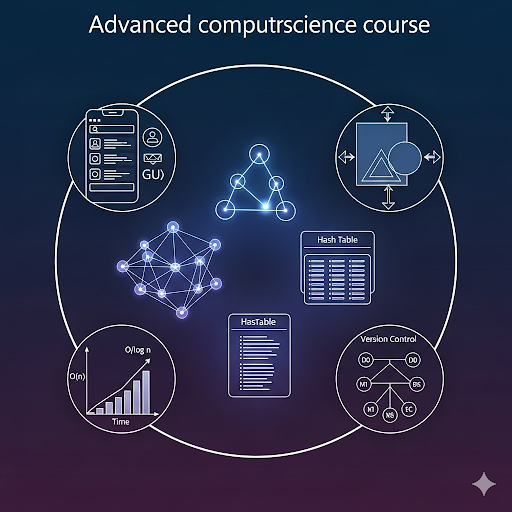
CS 300: Programming II
Introduction to Object-Oriented Programming using classes and objects to solve more complex problems. Introduces array-based and linked data structures: including lists, stacks, and queues. Programming assignments require writing and developing multi-class (file) programs using interfaces, generics, and exception handling to solve challenging real world problems. Topics reviewed include reading/writing data and objects from/to files and exception handling, and command line arguments. Topics introduced: object-oriented design; class vs. object; create and define interfaces and iterators; searching and sorting; abstract data types (List,Stack,Queue,PriorityQueue(Heap),Binary Search Tree); generic interfaces (parametric polymorphism); how to design and write test methods and classes; array based vs. linked node implementations; introduction to complexity analysis; recursion.
Advanced/Intermediate Statistic Classes
STAT 436: Statistical Data Visualization (Planned Spring 2027)
Techniques for visualization within data science workflows. Topics include data preparation; exploratory data analysis; spatial, tabular, and graph structured data; dimensionality reduction; model visualization and interpretability; interactive queries and navigation.
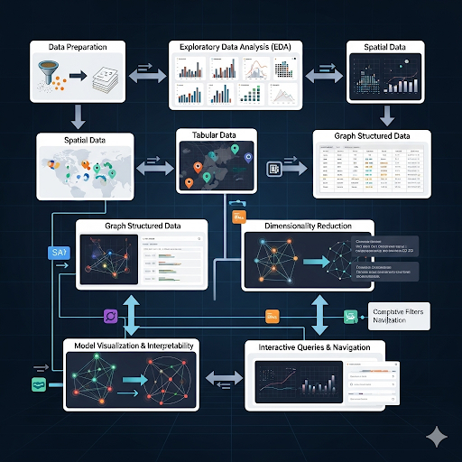
STAT 340: Data Science Modeling II
Teaches how to explore, model, and analyze data using R. Topics include basic probability models; the central limit theorem; Monte Carlo simulation; one- and two-sample hypothesis testing; Bayesian inference; linear and logistic regression; ANOVA; the bootstrap; random forests and cross-validation. Features the analysis of real-world data sets and the communication of findings in a clear and reproducible manner within a project setting.
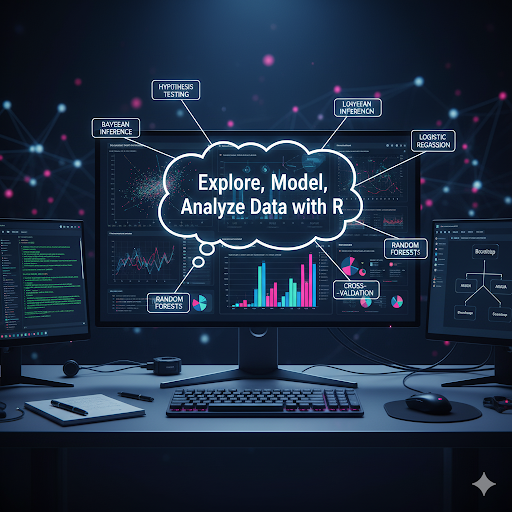
STAT 240: Data Science Modeling I
Introduces reproducible data management, modeling, analysis, and statistical inference through a practical, hands-on case studies approach. Topics include the use of an integrated statistical computing environment, data wrangling, the R programming language, data graphics and visualization, random variables and concepts of probability including the binomial and normal distributions, data modeling, statistical inference in one- and two- sample settings for proportions and means, simple linear regression, and report generation using R Markdown with applications to a wide variety of data to address open-ended questions.
Advanced/Intermediate Library and Information Science Courses
L I S 640: Securing Information Networks
This course provides a hands-on introduction to computer networking and the fundamentals of network security. Students will build a solid foundation in core networking concepts - IP addressing, subnetting, switching, routing, DHCP, and DNS - before diving into key security topics such as cryptographic protocols, firewalls, intrusion detection and prevention, wireless and cloud security, and emerging technologies. Through practical labs and guided projects using tools like Wireshark and Nmap, students will gain experience with network scanning, VPN configuration, and firewall management. Case studies and policy development exercises tie technical skills to real-world security challenges across both traditional and cloud-based systems.
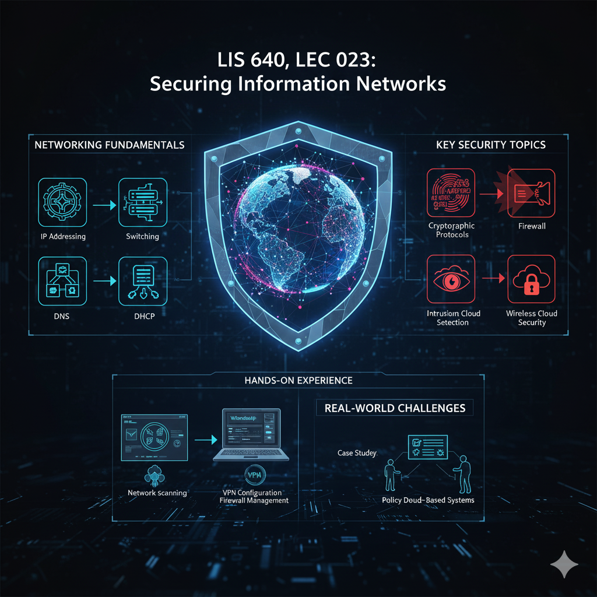
L I S 640: Responsibility in the Age of Big Data & AI
This course has three primary aims. The first is to explore the theoretical underpinnings of moral responsibility and its importance to our social and legal practices. The second is to identify the ways in which these practices are challenged in the context of Big Data and AI and to evaluate a variety of proposals for addressing these challenges. The third and final aim is, by way of a forward-looking approach, to articulate concrete means of engaging responsibly with Big Data and AI.
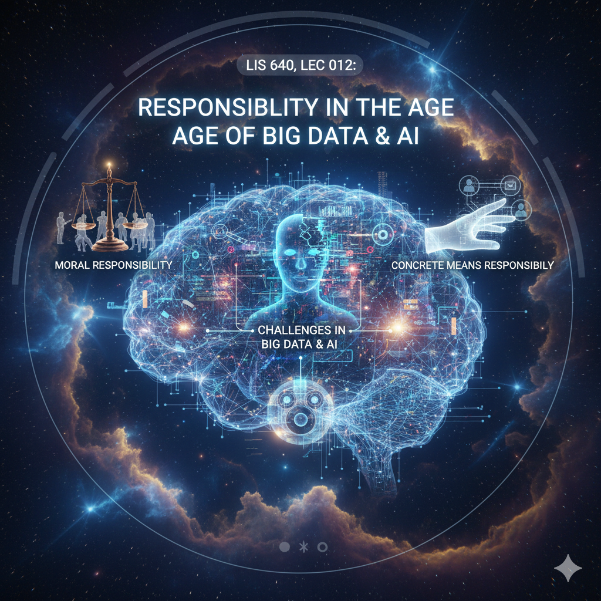
L I S 501: Introduction to Text Mining (Planned Spring 2027)
Introduces computational methods and tools for processing, analyzing, and understanding text data. Topics include text data preparation and preprocessing, models of text content and meaning, exploratory text analytics, text classification, information extraction from texts, ethical issues in natural language processing (NLP), and related applications in information sciences and other fields. Develops practical skills to design and implement text mining solutions using popular NLP tools and programming packages.
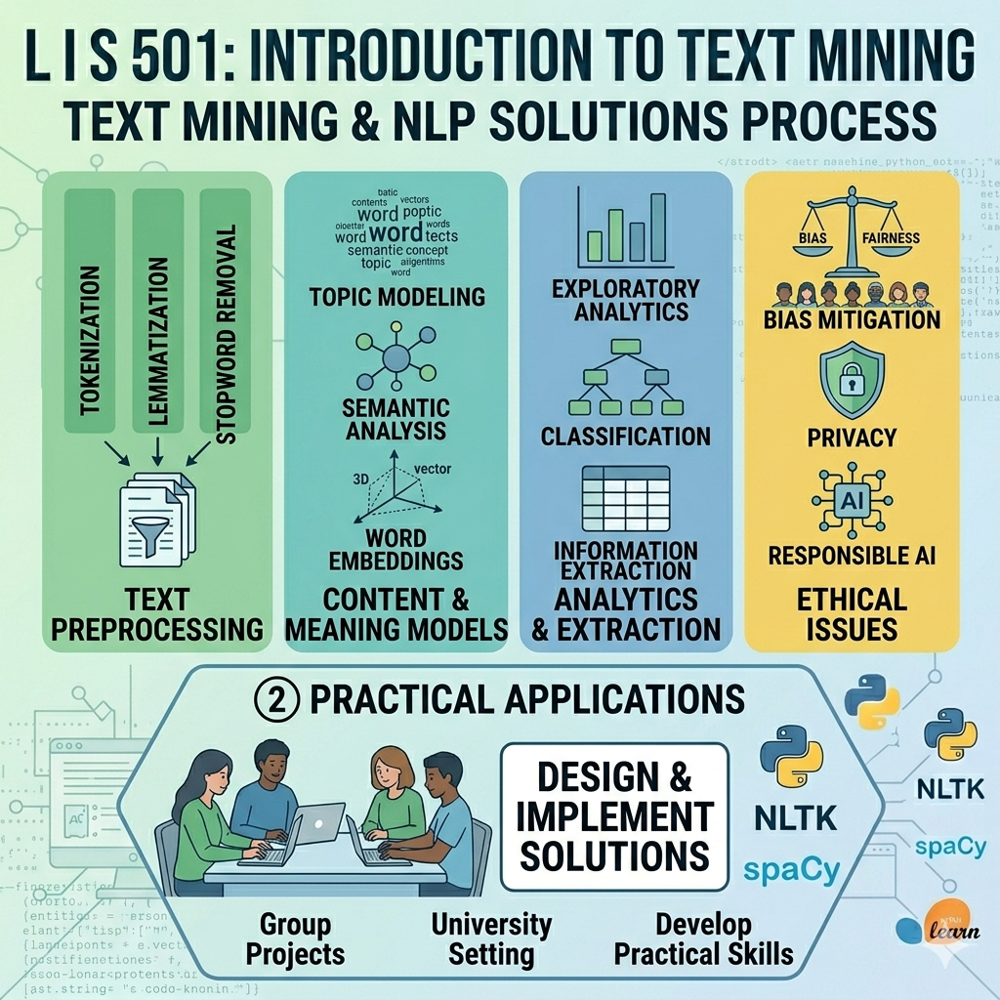
L I S 470: Interaction Design Studio
Introduces interaction design, an approach to designing digital information systems that places humans and their needs at the center of the design process. Explores how core principles of design, design processes, cognition, information science and human values inform the design of interactive information systems. Discussion and practice apply the data-driven process of human-centered interaction design to develop new digital products and services.
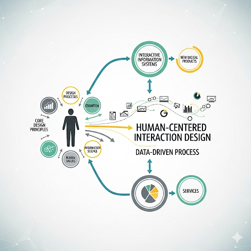
L I S 462: Data and Algorithms: Ethics & Policy (Planned Fall 2026)
An introduction to ethical, legal and policy issues related to analytics, "big data" and algorithms to support decision making. Gain familiarity with major debates and controversies in a variety of contexts. Critically analyze course materials and apply moral reasoning and legal concepts to assess case studies and critique arguments made by others.
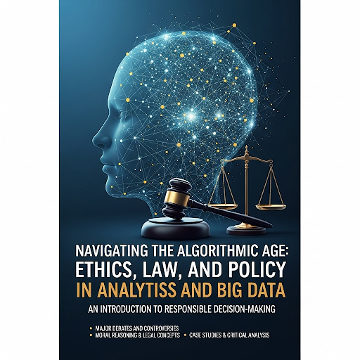
L I S 351: Introduction to Digital Information (Planned Spring 2027)
Prepares students to use information technologies to solve problems and help people through implementing information infrastructures such as websites, databases and metadata. Students will explore information access, information representation, usability and information policy issues, and increase their understanding of the social impacts and social shaping of information infrastructures.
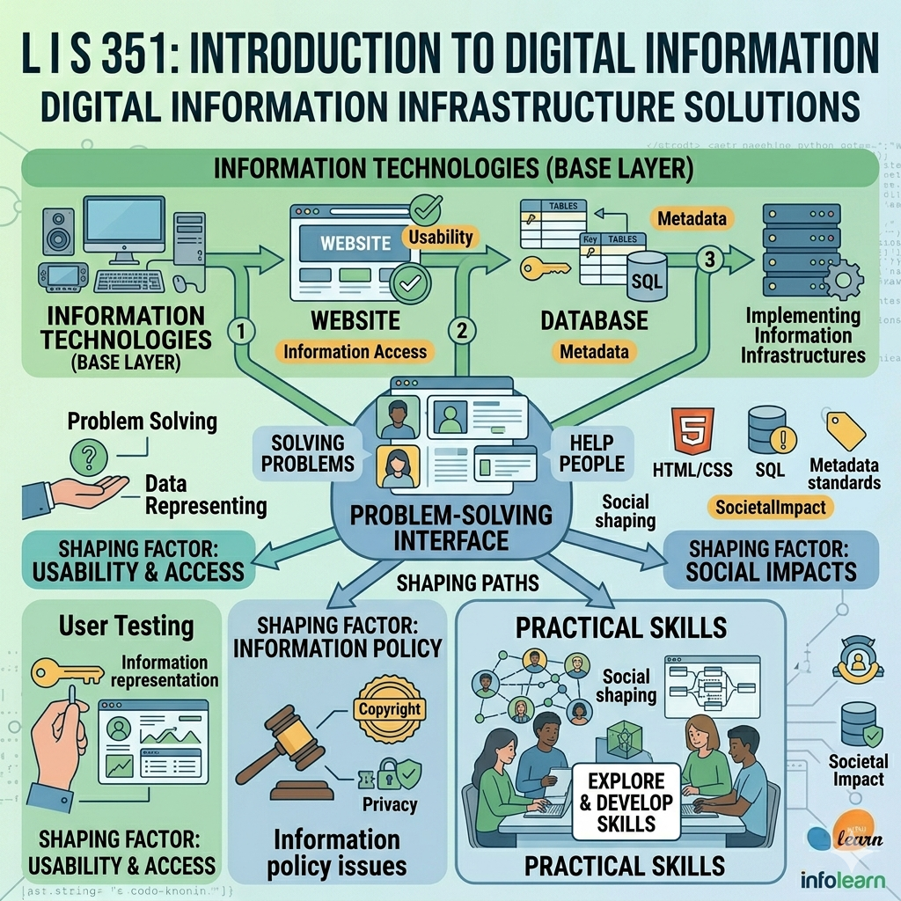
Other Classes
ENGL 422: Outstanding Figure(s) in Literature before 1800
Study of major figure or figures in literature written before 1800.
PHILOS 101: Introduction to Philosophy
Introduction to various philosophical questions and to the strategies that philosophers use to address these.
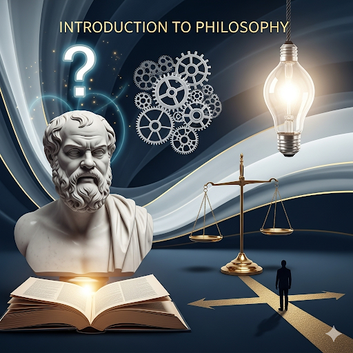
FOLKLORE 220: The Folk Tale
Types of heroes, social functions, and tellers; tales from four cultures.
BOTANY 260: Introductory Ecology
The relationships of organisms and the environment. Population dynamics and community organization, human-environment relationships, action programs.
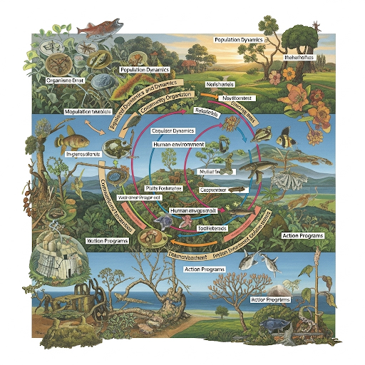
ESL 118: Academic Writing II
Academic writing, critical reading and argumentation, documentation, and style and organization of research papers; oral communication skills for effective class participation and presentations. Not open to auditors.